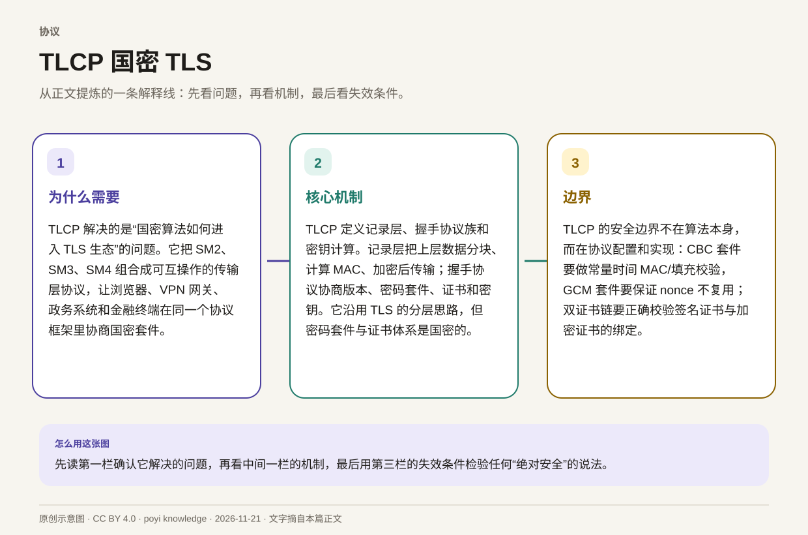
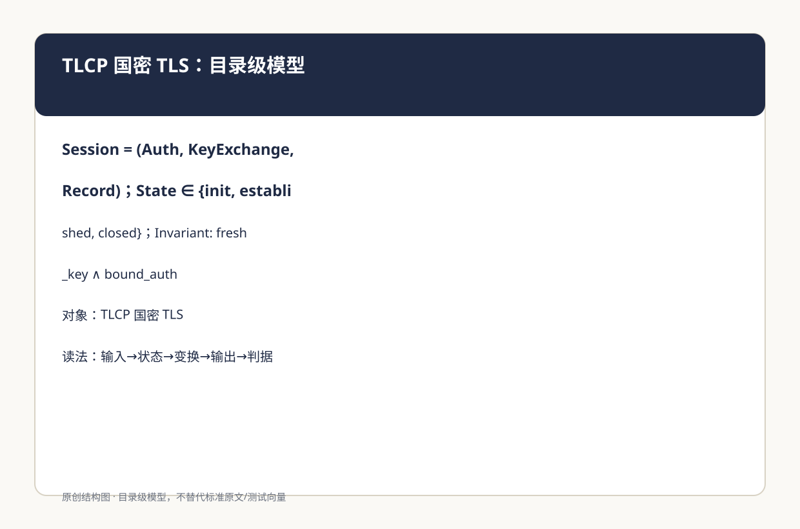

原理与机制
协议：TLCP 国密 TLS（TLCP）。### 记录层与握手
TLCP 定义记录层、握手协议族和密钥计算。记录层把上层数据分块、计算 MAC、加密后传输；握手协议协商版本、密码套件、证书和密钥。它沿用 TLS 的分层思路，但密码套件与证书体系是国密的。### 国密套件
标准列出的套件包括 ECDHE_SM4_CBC_SM3、ECDHE_SM4_GCM_SM3、ECC_SM4_CBC_SM3、ECC_SM4_GCM_SM3，以及 IBSDH、IBC、RSA 等变体。密钥交换用 SM2（ECC/ECDHE）或 RSA/IBC；记录层用 SM4-CBC 或 SM4-GCM；完整性与 PRF 用 SM3。### 双证书
TLCP 使用签名证书和加密证书分离的双证书体系：签名证书证明身份，加密证书参与密钥交换/加密。这是它与常见单证书 TLS 部署最明显的差异。

为什么重要
TLCP 解决的是“国密算法如何进入 TLS 生态”的问题。它把 SM2、SM3、SM4 组合成可互操作的传输层协议，让浏览器、VPN 网关、政务系统和金融终端在同一个协议框架里协商国密套件。没有 TLCP，SM2、SM3、SM4 只能各自作为算法使用；有了 TLCP，证书、握手、密钥派生、记录保护和告警才能形成完整链路。
应用与实例
用于 SSL VPN 网关、国密浏览器、政务云、金融专网和信创系统。部署时通常需要支持双证书的 CA、SM2 证书链、SM3 签名和 SM4-GCM/CBC 的密码模块。读这条时要注意：TLCP 不是“把 TLS 1.3 的算法换成 SM”。它的握手和套件定义有自己的标准，和普通 TLS 端点通常不能直接互通，需要双方都支持 TLCP 或做协议转换。

边界与攻击面
TLCP 的安全边界不在算法本身，而在协议配置和实现：CBC 套件要做常量时间 MAC/填充校验，GCM 套件要保证 nonce 不复用；双证书链要正确校验签名证书与加密证书的绑定；降级攻击、版本回退、证书替换和实现侧信道都要防。它也不是“默认安全”：如果部署方只换了算法却保留弱随机数、错误证书校验或旧版本回退，链路仍然会被攻破。
历史与背景
TLCP 的前身是 GM/T 0024-2014《SSL VPN 技术规范》，2014 年 2 月发布；它在 TLS 1.1 的框架上增加 ECC/IBC 认证和密钥交换，并重定义国密套件。2020 年 4 月，GB/T 38636-2020《信息安全技术 传输层密码协议（TLCP）》发布，2020 年 11 月实施，把行业标准上升为国家标准。2023 年 GM/T 0024 修订，增加 Hello 扩展；TLCP 与 TLS 1.3 仍不是同一协议。
技术参数与复算边界
该条目的形式模型是 (\mathrm{Adv}^{\Pi}_A(\lambda)\le n\cdot\mathrm{Adv}^{\mathrm{prf}}F(\lambda)+\varepsilon{\mathrm{aead}}(\lambda))。输入：输入：TLCP 国密 TLS的公开参数、密钥/随机数与消息；变量说明：Π 协议，A 敌手，n 会话数，PRF/AEAD 为底层原语。 预期输出：按 TLCP 国密 TLS 的规范执行后得到可验证的输出或可比较的优势界。 复算必须给出输入、步骤、输出和单位；示例只演示流程，不替代标准测试向量。
复杂度由密钥长度、分组/状态规模、轮数、随机数质量和敌手模型共同决定；参数越界、版本差异与实现侧信道都可能使公式结论失效。已登记限制：该条目只给出形式模型与可复算步骤，不声称已完成生产实现、侧信道认证或第三方安全评估。
参数与状态规模
公式 (\mathrm{Adv}^{\Pi}_A(\lambda)\le n\cdot\mathrm{Adv}^{\mathrm{prf}}F(\lambda)+\varepsilon{\mathrm{aead}}(\lambda)) 的输入、输出和单位必须逐项登记；复算顺序为：1. 把协议消息序列写成状态机 2. 用混合论证逐个替换原语 3. 把剩余优势归约到 PRF/AEAD 安全。
状态规模、密钥长度、分组长度和轮数决定复杂度；这些量不能从标题推断，必须以标准或实现文档为准。
逐步示例与核验
形式模型与复算步骤
[\mathrm{Adv}^{\Pi}_A(\lambda)\le n\cdot\mathrm{Adv}^{\mathrm{prf}}F(\lambda)+\varepsilon{\mathrm{aead}}(\lambda)]
TLCP 国密 TLS的公开参数、密钥/随机数与消息；变量说明：Π 协议，A 敌手，n 会话数，PRF/AEAD 为底层原语。1.把协议消息序列写成状态机。2.用混合论证逐个替换原语。3.把剩余优势归约到 PRF/AEAD 安全。边界：公式只覆盖已登记的参数与假设；参数取值、标准版本和实现细节仍以来源为准。
参考出处
- Wikipedia search entry for TLCP 国密 TLS. https://zh.wikipedia.org/w/index.php?search=TLCP%20%E5%9B%BD%E5%AF%86%20TLS
- Handbook of Applied Cryptography (Menezes, van Oorschot, Vanstone). https://www.cacr.math.uwaterloo.ca/hac/